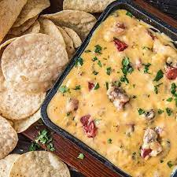

Smoked Queso

Best Damn Queso on the planet
This smoked chilli con queso will blow your socks off.
Trust me, I know how to make 2 paragraphs in an HTML doc
Ingredients
- 1 pound of ground sausage
- 2 pounds of Velveta chesse/li>
- 4 Table spoons of Coffee Rub
- 2 Cans of Rotell diced tomatoes
- 2 cups of shredded Guoda cheese
- 1 can of cream of mushroom soup
Steps
- Preheat smoker to 375
- Brown sausage in frying pan or cast iron skillet
- Combine all ingredients into dutch oven
- Somke for 45 mins stiring every 15 mins